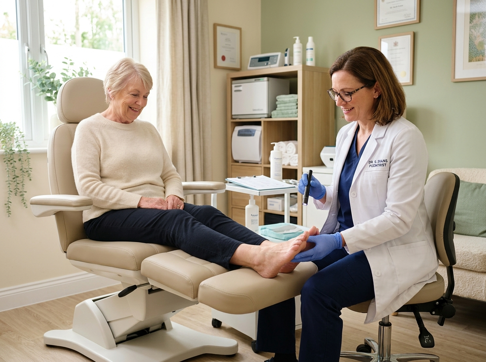
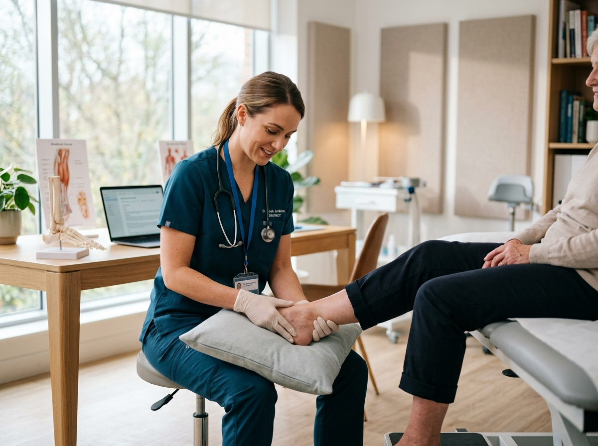

Thoughtful podiatry care for common foot concerns, personalized treatment planning, and ongoing support for everyday mobility.

Eliminate the root causes of plantar fasciitis, shin splints, and tibial stress syndrome. In-shoe pressure telemetry pinpoints overpronation during fatigue miles.
Rapid lateral deceleration and jump landing stabilization. Custom stabilizing orthotics designed for basketball, soccer, tennis, and turf sports.
High-energy Focused Shockwave (ESWT) combined with eccentric loading protocols to reverse chronic tendon degeneration without surgical downtime.
The arch collapses on ground impact, forcing the ankle inward and causing internal tibial rotation that strains the medial knee meniscus and Achilles tendon.
The foot lands on the lateral heel and rolls smoothly through the center of the ball of the foot with approximately 15% natural pronation to dissipate kinetic shock.
The arch does not flatten sufficiently on impact, transmitting harsh shock waves straight up through the lateral ankle, fibula, and lower back.

Foot discomfort is often dismissed as everyday fatigue until it begins affecting daily mobility, posture, or personal wellness. Recognizing these common indicators helps you seek timely, professional guidance before minor symptoms turn into chronic limitations.
Morning heel stiffness upon taking your first steps, arch ache after standing, or foot fatigue that does not resolve with rest.
Pressure, friction, or joint changes at the base of the big toe that create shoe irritation or alter your natural foot placement.
Sensations of tingling, numbness, reduced sensitivity, or slow-healing skin changes that benefit from routine clinical evaluation.
Altering your normal gait to protect a tender spot, frequently creating secondary strain in the ankles, knees, or lower back.
Unstable foot strikes, collapsing arches, or uneven shoe wear that signal a need for targeted biomechanical realignment.
We make seeking podiatric care simple, supportive, and completely transparent from your first visit onward.
Choose a convenient appointment time online or by phone and share what brings you in.
Discuss your concerns, undergo a thorough physical evaluation, and receive a personalized care plan.
Follow the treatment or support plan recommended for your needs, with clear guidance at every step.
Keep up with follow-ups, treatment history, and custom orthotic progress when applicable.
Schedule your full 45-minute biomechanical motion capture evaluation with our sports podiatry team.